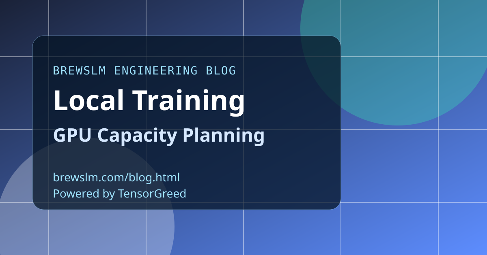

Estimate VRAM from first principles
Base estimates on parameter count, precision, sequence length, batch size, and optimizer behavior. Include activation and checkpoint overhead explicitly. Rough numbers are useful only when they include margin for runtime variance.
Plan experiments in risk tiers
Run low-risk pilots first with conservative sequence lengths and smaller batches. Promote only configurations that pass preflight and telemetry thresholds. Tiering keeps local queues moving while still enabling quality exploration.
Protect shared workstations with scheduling rules
When multiple engineers use the same hardware, enforce queue windows and cancellation policy. Unmanaged concurrency causes unpredictable failures and team-wide delays. Capacity planning is as much about coordination as it is about raw hardware.
Track capacity assumptions as versioned metadata
Record estimated and observed memory usage for every run. Over time, this builds a local capacity baseline that improves planning accuracy. Historical telemetry turns guesswork into a reusable operating model.